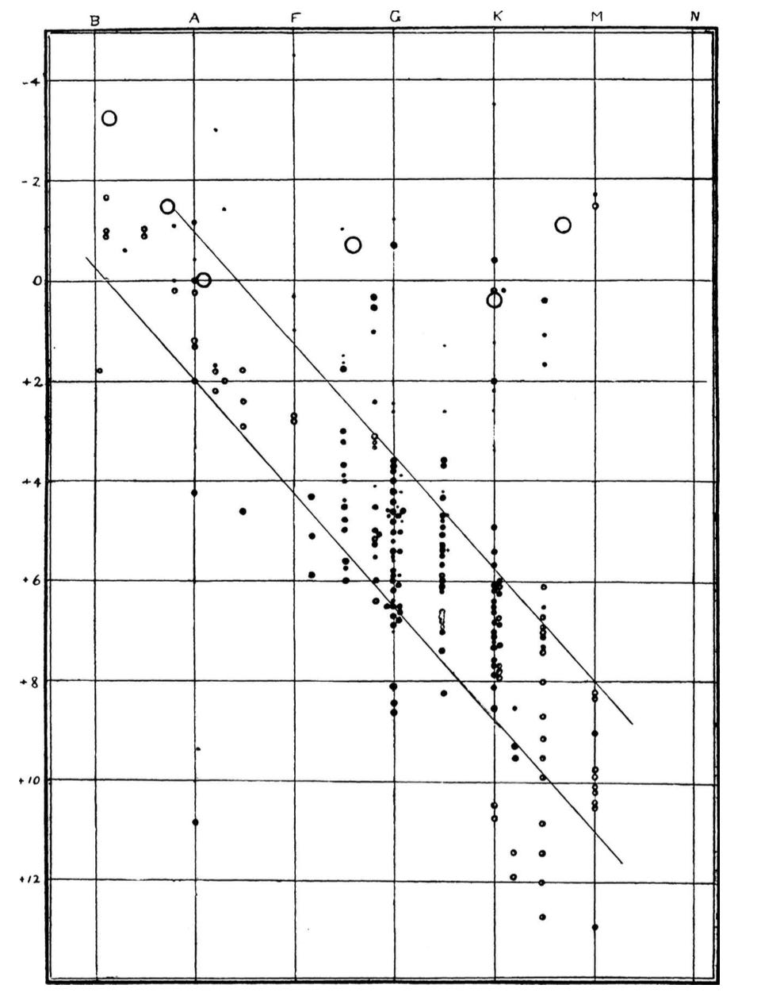
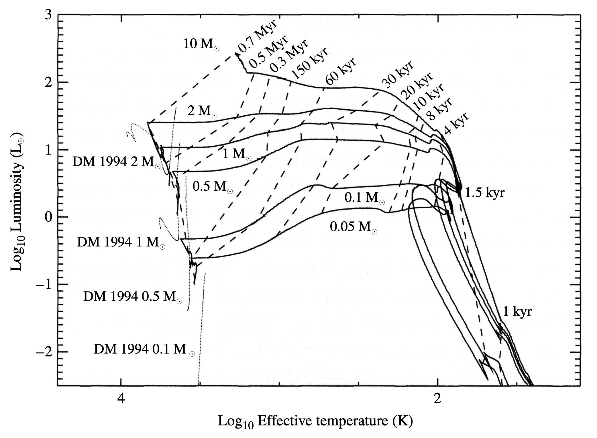
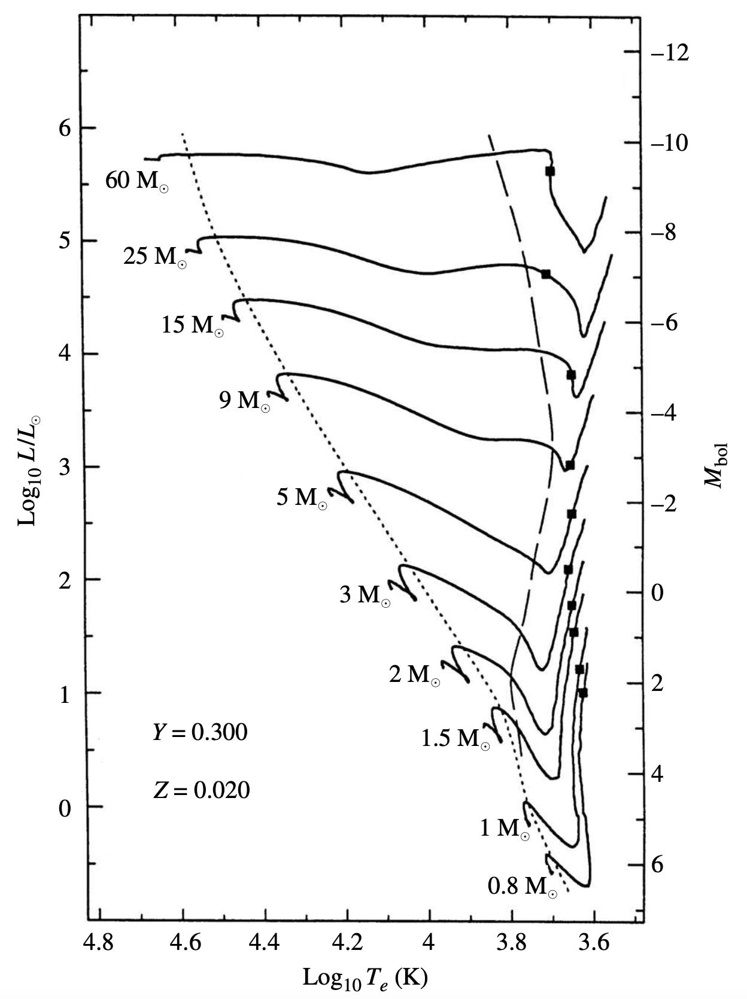
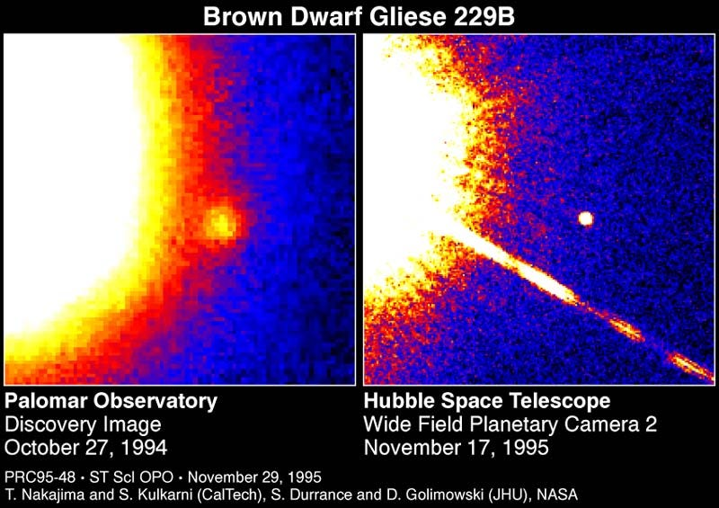
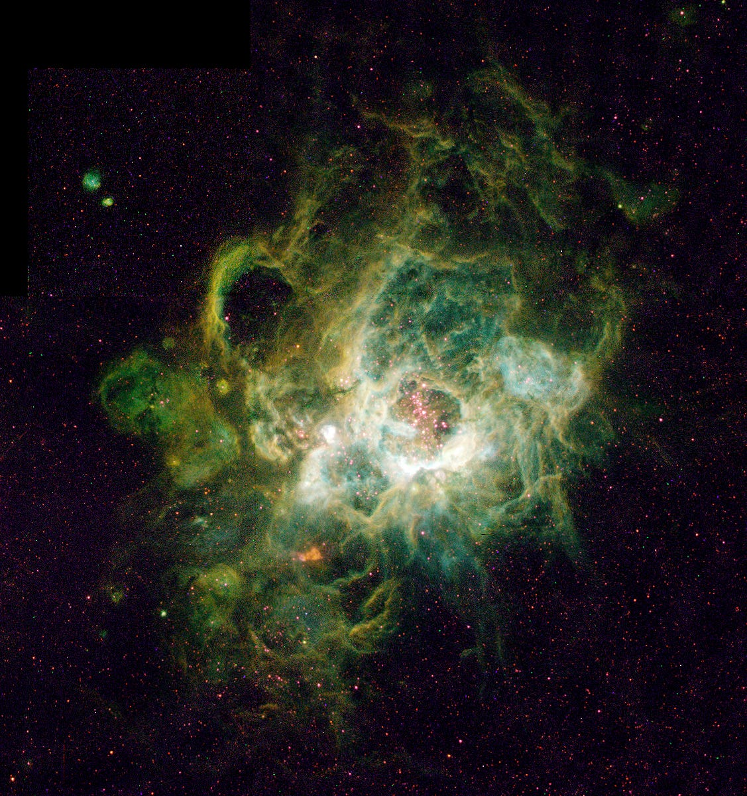
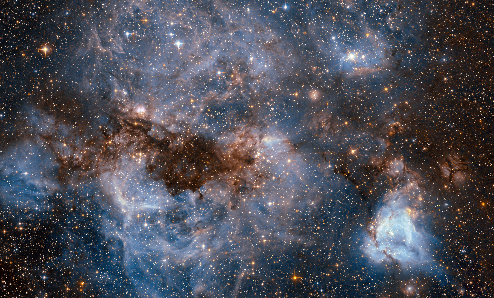
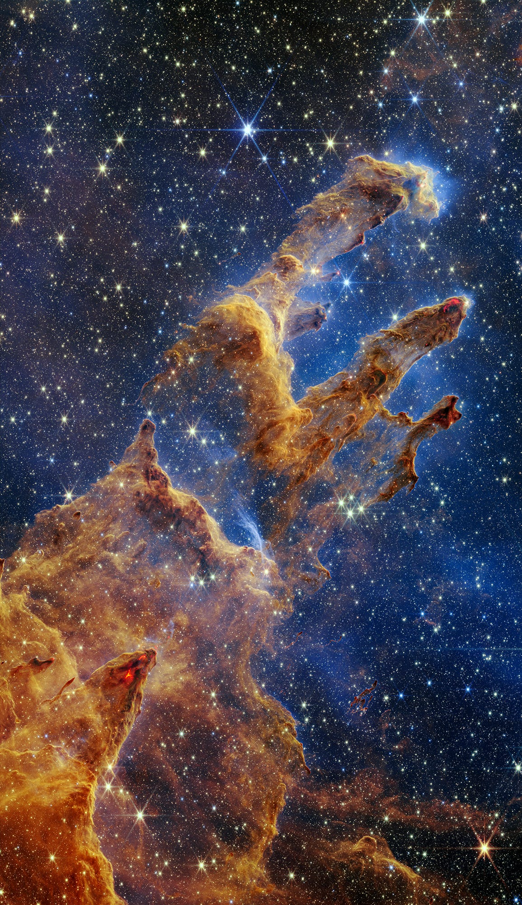
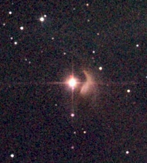
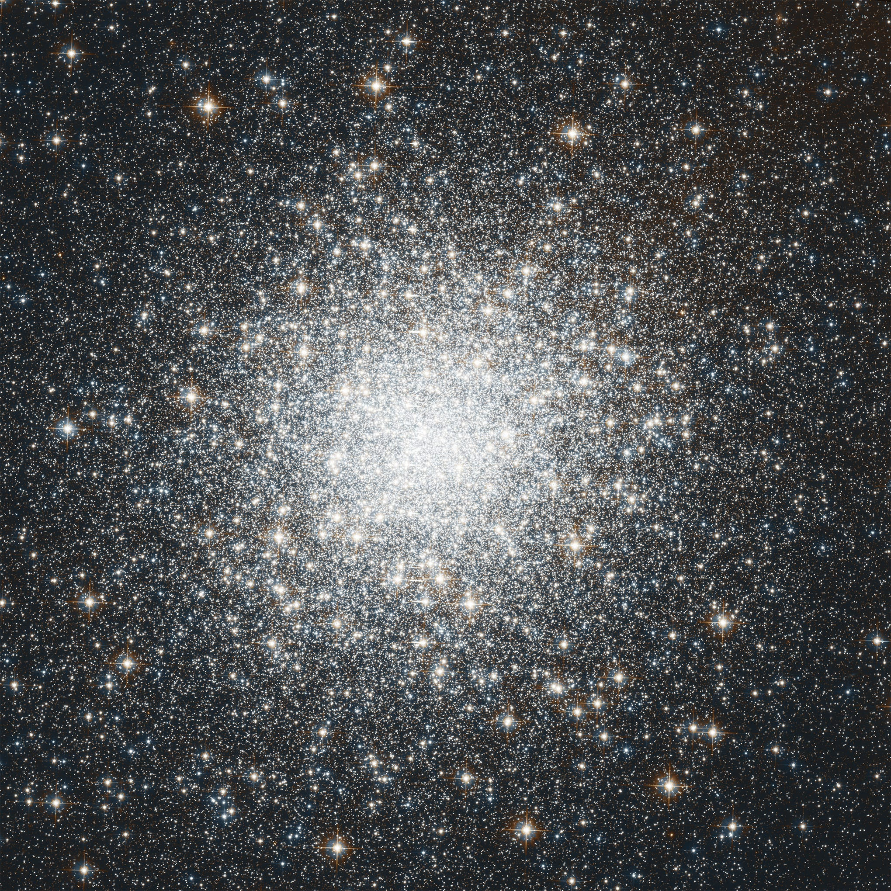

This is what I'm listening to lately:
Maribous State is a duo from Hertfordshire, England.
They compose electronic music.
You can find Maribou State on
Bandcamp,
Apple Music,
Spotify,
YouTube.
Hallucinating Love was published on Jan 31, 2025
This is what I read today:
Soundscapes of the Silenced
by Erin Maglaque
on The New York Review of Books.
I'm still a bit behind on the NYRB, as well as on the New Yorker and the London Review.
But I'll manage to read through all of them, eventually.
Today I was in a conversation about sulfur and its connection with the devilish figures of literature.
Then I thought about the smell of sulfur and how it is used in the Bible to describe the smell of hell.
Then I thought about the idea of hell in literature.
And I figured the beautiful art of Gustave Doré.
And I remembered the illustrations he made for Dante's Divine Comedy.
This is one of many:
Inferno, Canto X.

Inferno, Canto X. Gustave Doré
Today Bon Iver announced a new album.
Which is great news.
The new album, called
'SABLE, fABLE'
will be released on April 11, 2025.

the new album cover. all rights reserved.
Today, a brief reminder that not every change must be visible.
Some things take time, and change is barely perceivable.
Today I started a new path, let's see where it'll lead.
But after all, you have to have gratitude.
So let's listen to some gratitude.
This is not just a song. It was first a
poem.
Today I'm sharing a poem by Matsuo Basho.
It's a haiku.
いざ行かむ
雪見
に
ころぶ
所
まで
which sounds like:
iza yukan
yukimi ni korobu
tokoro made
and it means, translated in English by Andrew Fitzsimons:
Let's get up and go
view the snow till we come to
wherever we fall
I stumbled on this haiku while reading
Linus,
a magazine about books and graphic novels,
in a piece named "Paese delle Nevi",
by Giovanni Piliarvu.
Today I went to see We Live in Time, the new movie by John Crowley starring Florence Pugh and Andrew Garfield.
I found it beautiful, along with the soundtrack, composed by Bryce Dessner.
I made this website to share my thoughts, but also as a way to show what I'm learning to do in terms of web development and coding.
It's not necessarily something that must be shared, but it's a way to practice and learn.
After today, I will not update this website daily, but I will work on it and update it regularly.
I will refine some things I did in a hurry, and I will add some new features to my pre-existing projects.
See you soon!
I'm back!
I've been a bit busy at work and then I didn't want to come writing here, but here we are once again.
I've started studying Machine Learning, but after two weeks I realized I had to properly learn the way it should be: back from the start.
So I'm studying Statistics and then I'll come back to ML.
In the meanwhile, here's a beautiful song I hope you'll cherish the way I do.
Beginnings are hard. Especially for the Universe.
Welcome to the new, first, only place where you can look up to the immensity of the cosmic structures.
1. Why Last, why Scattering and why Surface?
The idea behind the name “Last Scattering Surface” came to me while I was studying for my Cosmology exam during my ongoing Master’s Studies in Astrophysics.
The idea behind the project is to talk about whatever fascinates me about the Universe. It’s going to be a long journey.
2. Do you feel like you should join this project?
Do you feel anything at all when you gaze upon the stars (abused expression, pardon me)?
If this is the case for you, here you can find something to enjoy yourself while gazing.
Whenever you decide to stop staring at the sky and decide to use the Internet, he said.
But what is exactly the "Last Scattering Surface"?
und einsam
Unter dem Himmel, wie immer, bin ich.
Friedrich Hölderlin - Abendphantasie
If you know, don't keep it to yourself! Go out and shout it to your friends and family.
If you don't know, wait until you have read this post. Then read again this subtitle.
To understand why this project is called this way,
we need to clarify what means in Cosmology to have a surface of last scattering.
To get this, we need to understand what happens in the Universe - actually,
what happened in the first millennia of its life. 1
In this scenario, the Universe is characterizable as a relativistic2 fluid.
In addition, every component interacts with every other, and the fluid is in
thermal equilibrium (there is not any heat flow).

The anisotropies of the Cosmic microwave background (CMB) as observed by the COBE mission. Image credit: NASA
As time passes, the Universe expands and cools down, rendering it possible for
electrons to bond with protons to form the simplest atom (spoiler - Hydrogen atom).
This era of the history of the Universe is often called the “recombination era”,
even though there was not a previous time when these components “combined”.
So “recombination era” is just a funny name.
The components of the Universe at the time of our investigation are
primarily photons, protons, electrons, and hydrogen atoms.
Unlike the early days, a colder Universe is not fully ionized.
There are single charges freely flowing in space, and that’s why the
rate of scattering3 falls.
When the rate of ionization has fallen, the photons have nothing to
interact with and don’t scatter with the matter, starting to “free stream”
into the Universe as it expands.

The anisotropies of the Cosmic microwave background (CMB) as observed by the WMAP mission. Image credit: NASA
When the rate of ionization has fallen, the photons have nothing to
interact with and don’t scatter with the matter, starting to “free stream”4
into the Universe as it expands.
The Temperature of this “Cosmic Background Radiation” (CBR) is
measured to be:
T = 2.72548 K
where K stands for Kelvin (the only correct way to measure temperatures -
sorry Celsius, not sorry Fahrenheit).
We said that the CMB cools down with the expansion.
This means that when recombination started and finished the era
of matter-radiation interaction, the CMB had a different temperature.
One can calculate the time t this happened, the temperature T
at which this happened, and the relative redshift5.
Now, let’s be said that is not like CMB photons won’t ever interact with anything anymore.
It’s just that this won’t happen as frequently as when the radiation was coupled with matter.
So this sea of photons will continue to travel through the Universe as
it expands, cooling and expanding.
To visualize this surface, we could first try to look at the best image
we have of the background radiation (parametrized by its temperature) as
it is today. Here it is:

The anisotropies of the Cosmic microwave background (CMB) as observed by the Planck space telescope. Image credit: ESA and the Planck Collaboration
We said that the temperature is almost 3 K: then why are there differences in this image,
and it’s not just one color?
That’s because there are indeed some little anisotropies,
due to various phenomena, but primarily because different parts of the Universe evolved in slightly different ways.
The different colors show that there are cooler and hotter parts of the Universe.
So what is the last scattering surface? It’s this huge wall of photons that continuously travel
towards the outer parts of the Universe (why, are there also inner parts of the Universe? Is there a center?6 )
like an opaque window that renders it impossible to look beyond.
That's it for today.
We hope to have motivated you to look upon this subject.
If you want to look closely and deeply into the rabbit hole,
here are some books/articles/links to enjoy.
Hope to hear from you soon!
And here is some music to help you surf this Last Scattering Surface:
Footnotes
space sound:
Hallucinating Love by Maribou State
a duo from southern England that makes heartwarming electronic music
I don’t exactly like electronic music.
That is probably not true, but I like it blended with some other genre.
I don’t really know where I’m going with this, so I’ll go straight to the point.
I stumbled upon
Maribou State through their first studio album,
Portraits (2015).
I saved one song in my Spotify favourite songs, then lost track of this duo.
I caught myself listening in loop their second LP,
Kingdoms in Colour (2018), this fall, but I did not connect the dots that those two LPs came from the same group.
Last January,
Chris Davids and
Liam Ivorym, the two English musicists behind Maribou State released
Hallucinating Love (2025), and it got in my feed (by then I had switched to Apple Music).

Maribou State - Hallucinating Love (2025)
Hallucinating Love seems festive since its beginning (
Blackoak). It promises to go somewhere, and it delivers in the second part of the song.
Otherside is exactly how I imagine clubs in the 1930s in a retrofuturistic utopia, and shares with
Peace Talk the presence of
Holly Walker, longtime collaborator of Maribou State.
II Remember feels exactly like something you try to remember when someone clicks their fingers in front of you after you zoned out while they were talking; it blends into the next song (
All I Need) that carries you once again in a safe space.
Dance on the World starts almost Daft Punk-ish, then becomes the most danceable track on the record.
Bloom is another track where the rhythm and the cadence take you without hitting anything in particular to the next one.
Peace Talk starts almost announcing some blending of Middle Eastern music with electronics, and it seems to exist only to be embellished by the voice of Holly Walker.
Passing Clouds is an instrumental, and its position in the tracklist escorts you out of the club from which they will play the next song,
Eko’s, that maybe should be listened to from a different room.
Rolling Stone closes the LP, and it’s a hymn you should not be afraid to sing, together with those you listen to music with.
If you liked this, you could share this project with others.
See you next time!
space sound: Middle Farm Session by Daughter
the new work by the trio fronted by Elena Tonra is a gentle wound
Sad music is so good to listen to.
I think many can relate, and it is particularly true when it is produced by someone that you can imagine are listening to their own sad music.
Daughter falls in this category: the trio formed by
Elena Tonra,
Igor Haefeli, and
Remi Aguilella is always on the verge of
cracking you up and making you cry, and does so by warmingly encouraging you to accept that not everything must be happy to be beautiful.
They formed in
2010 and recently released an EP registered at the Middle Farm Studios in Dartmoor,
Middle Farm Session (
2025).
I stumbled upon
Maribou State through their first studio album,
Portraits (2015).

Daughter - Middle Farm Session (2025)
It starts as a conversation with
Future Lover, where we get caught
listening for sweet nohings from ghost in the room
and Tonra presses us to answer her questions, “
what’s the future like?”,
to which someone replies “
wait another year”, and we’re just happy to be interrogated by her voice.
Party is not a song you could party with, but could be the perfect score for an end-of-relationship-kind-of-conversation,
making that night “
the worst night of [your]
life”.
To Rage is the perfect sequel to Party, where we’re left tracking the pieces left by those exhausting conversations
that explode, when someone storms out of the room and you end up “
distraught”.
Be on your way is the perfect therapy session you need after that, when you make sense of what happened,
of the planets that mark the distance between you two; and as long as you try to “
be on your way”,
you’ll find it difficult to “
reconstruct the scene”.
Dandelion exits from that loop, and the music of Haefeli and Aguilella follows that more than ever,
lifting a bit up the rhythm: and it’s not “
a shame” like Tonra sings,
because it’s a brief parenthesis that closes on
Isolation, where we feel the coming to an end of the EP,
“
full-knowing we’re incomplete”; and indeed the last song is
Neptune,
where we come back almost full circle to the Tonra of
If You Leave (
2013), but Tonra here seems to be a bit more liberated to experiment with her voice.
If you need to put some faith in a record, you should start with this one: in the end, there’s no-one out there to whisper answers.
If you liked this, you could share this project with others.
See you next time!
single space: 17 by Youth Lagoon
the day that you do is the day that you die
"it is a space I no longer inhabit, nor want to inhabit. Youth Lagoon is complete. I’ve reached the top of a mountain, only to then be able to see a much larger one I want to ascend."
17 came from a complete project: it’s the fourth track on the first album produced by Trevor Powers under the moniker Youth Lagoon, The Year of Hibernation (2011). The LP was followed by Wondrous Bughouse (2013) and Savage Hills Ballroom (2015).
Powers sings that the day you stop imagining is the day you die (or at least this is what his mother told him): should this be connected to the publication of two new LPs since 2023, eight years after the statement that ended Youth Lagoon?
It’s not why we’re here though - let’s not speak of the future.
But where’s here, and when is it? The year is 2013 and the place is
Boise, Idaho (coming - running away? - from San Diego, California).
Power finds himself with a
brain that can
think faster than [he]
can but not fast enough,
and with thoughts that he’s sure would
lock [him]
up if spoken out loud.
He flees to his younger memories, where life was as fun as can be, going out hunting for snakes (too dangerous? - maybe that’s part of the fun), going out camping and swimming in lakes.
Produced alongside
Jeremy Park, the song is delicate yet cadences the dreamy beat it also conveys in the lyrics:
you can instantly imagine Powers reminiscing his younger years, and when the drum beat comes in you get his thoughts
piling up and exploding, not too loud to make a scene, though.
Maybe we’ll come back to talk about one of Youth Lagoon’s last LPs, but for now, let’s hope he’s still having fun, like when he was 17.

Youth Lagoon - 17 (2013)
If you liked this, you could share this project with others.
See you next time!
Why is dark at night? E.A.Poe and the Olbers's Paradox
If you look up at night, you'd be struck with surprise if the sky was bright as day?
And if not, where do you live? Either way, we will delve into details to understand why the sky is dark.
The darkness of the sky looks natural.
The Sunsets is at the horizon, maybe there is a new moon and you are left with the light of stars (and light pollution, unfortunately).
But why is that so?
From a paper left in the drawer to the Steady-State Universe: 125 years of ignoring citations - and footnotes.
Olbers’s paradox can be stated as follows:
"[…] ."
One of the scientists that posed enough attention to this problem to write a paper1 about it was Heinrich W.M. Olbers (1758-1840),
a German physician-then-astronomer, who in 1823 submitted an article to the Astronomisches Jahrbuch of Berlin (that didn’t take him
seriously, at least at first glance, because the article was published only three years later).

H.W.M.Olbers
This article was not considered in Germany, where Rudolf Wolf made no mention of it in his “Geschichte der Astronomie”2,
nor the British George B. Airy in his “Six Lectures on Astronomy”; not even in France, with the sole expectation of
Gustave-Adolphe Hirn, that in his “Constitution de l’espace celeste”3 argued that space was empty, not
filled with any medium of interaction between celestial bodies. He nonetheless tried to solve the problem of the darkness
of the night sky in an infinite Universe using the same concept, stating that the infinite extent of the Universe itself
rendered the question of the dark sky irrelevant because celestial bodies like the Earth would not intercept light in enough
quantity to make the sky bright as the Sun.
The greatest reaction to Olbers’s work of 1826 came from Friedrich G. W. von Struve, who stated4 that Olbers’s article was
“[…] that extreme clarity of ideas and expressions accompanied by a most
simple yet exact analysis that distinguish all the works of that great astronomer.”
According to Struve the only “problem” in Olbers’s paper was the assumption and the subsequent
absence of a demonstration of the absorption of light from interstellar matter.

F.G.W von Struve.
On the other side of the Atlantic Ocean, American astronomer Simon Newcomb discussed the same paradox (without directly citing Olbers).
He stated that most of the light disappeared
in the infinite Universe (even though an infinite number of stars in the Universe might be a problem with this reasoning).
This way of resolving a “problem-with-the-infinite” with another infinite was something close to the "Zeitgeist” of the century:
Lord Kelvin himself was the spokesperson of this “infinity/intelligibility” duality5.

Lord Kelvin.
Another step in this story was made by Swedish astronomer Carl V. L. Charlier, who in 1896 stated the Universe is
finite because (quoting Olbers) if this was not the case, the “whole vault of heaven should appear as bright as the sun”6.
.jpg)
C.V.L.Charlier.
The Swedish scientist made the mistake of not to read thoroughly Olbers’s paper:
he says that Olbers what himself the first to have pointed out this paradox,
not realizing that in the very same paper, Olbers states that the problem was
discussed beforehand by Edmund Halley.

Edmund Halley.
Anyway, Charlier’s solution (in 1922) to the problem of the infinite Universe was that
“the total luminosity of the universe and the total attraction of the universe both are finite,
if the radii R(i) of different galaxies are so chosen that the inequality
R(i)/R(i-1) > N^{1/2}_{i}
is satisfied”7. This was essentially the same result found by the
Soviet astronomer B. Fessenkov 15 years later.
This solution provided the Universe with spiral galaxies residing outside the Milky Way,
building the world in a “spherically ordered group of Galaxies […]”.
This conclusion did not attract great attention in England,
alongside Olbers’s paradox. The same didn’t happen in Germany,
where independently from Charlier a German cosmologist, Selety,
argued that the distribution of matter implied in the inequality
could harmonize an infinite world with general relativity.
Wrapping up, we can say that Olbers’s paradox was not very known or
cited in scientific literature until half of the 20th century,
and when this was the case was discussed filtered by the following works
of different scientists, like Struve, Charlier, and others.
In a paper8 of 1948 named “The Steady-State Theory of the Expanding Universe”
by H. Bondi and T. Gold, this more-than-a-century-old paradox was brushed up.
But this version of the paradox was somewhat reimagined.
F. Hoyle (another advocate of the steady-state theory) claimed that
was due to Bondi that the interest in Olbers’s paradox was revived.
But at what cost?
With how many alterations and changes, and to what extent?

Tommy Gold (left) with Hermann Bondi (center) and Fred Hoyle (right), circa 1960.
For example, Hoyle stated9 that the problem of the darkness of the sky was
“first asked by Olbers in 1826”. Is this true?
Was Olbers the first?
According to Olbers himself, no.
He explicitly states in his paper of 1826 that Edmund Halley has discussed the paradox
and its cosmological implications.
Not that Olbers’s angle on this situation is strikingly transparent,
to be honest. He failed to mention the work of Loys de Cheseaux,
author of “Sur la force de la lumiere et sa propagation dans l’ether”10,
where the French scientist arrives at a similar result that Olbers’s.
It’s really difficult to understand why, especially when one realizes
that the very same work of Cheseaux was in Olbers’s private library11 and
that Olbers is quite clear had to read at some point, based (Cheseaux’s work)
on the same topic Olbers’s astronomical research, i.e. the orbits of comets.

Jean Phillippe Loys de Cheseaux.
Anyway, Halley stated, in his papers “Of the Infinitt of the Sphere of Fix’d Stars”
and in “of the Number, Order, and Light of Fix’d Stars”12, that:
I have heard urged that if the number of Fixt Stars were more than finite, the whole superficies of their apparent Sphere would be luminous
Hope to hear from you soon!
It’s technically the same paradox described by Olbers.
At this point, one should not be surprised that the story doesn’t end with Halley.
When Halley proposed his paradox, the same question was over a century years old.
In 1610 Johannes Kepler (1571-1630) replied to Galileo’s “Sidereus Nuncius”13
with a letter that soon became a little book entitled “Conversations with the
Sidereal Messenger”14, where he was more interested in rejecting the concept of an
infinite Universe (proposed by Thomas Digges in 1576 and soon admired by Giordano Bruno)
than in creating a 400 years old set of paradoxes-and-(soon-to-be-forgotten)-solutions.

Johannes Kepler.
In his book15 the French philosopher Alexandre Koyré sums up Kepler’s view:

Alexandre Koyré.
This is the short version of Kepler’s motivation to reject the idea of an infinite Universe;
to put this using Harrison’s words16, “the choice was clear: either a
cosmic edge and a dark night sky, or no cosmic edge and a blazing sky.”
One could say that Olbers’s Paradox is no less Kepler’s paradox than
Olbers himself.
And what about E. A. Poe?
It’s quite striking noticing that Olbers’s Paradox was solved by the American
author E.A.Poe, who in his “Eureka - A Prose Poem” described the possibility
that the world was finite and not infinite. He states17:
No astronomical fallacy is more untenable, and none has been more pertinaciously
adhered to, than that of the absolute illimitation of the Universe of Stars.
The reasons for limitation, as I have already assigned them, a priori,
seem to me unanswerable; but, not to speak of these, observation assures
us that there is, in numerous directions around us, certainly, if not in all,
a positive limit -- or, at the very least, affords us no basis whatever
for thinking otherwise. Were the succession of stars endless, then the background
of the sky would present us an uniform luminosity, like that displayed by the
Galaxy -- since there could be absolutely no point, in all that background,
at which would not exist a star. The only mode, therefore, in which,
under such a state of affairs, we could comprehend the voids which our
telescopes find in innumerable directions, would be by supposing the distance
of the invisible background so immense that no ray from it has yet been able
to reach us at all. That this may be so, who shall venture to deny? I maintain,
simply, that we have not even the shadow of a reason for believing that it is so.

E.A.Poe not smiling.
To Poe, the solution is that the Universe is indeed limited,
so that exists a distance whence light is unable to reach us.
What cosmologists did in the second half of the 1900s,
Poe had accomplished over a century years before in the literary form.
The solution (?)
Now we use some mathematical
tools in order to resolve this paradox (if it is possible).
One way to solve this is to make the hypotheses that the Universe is infinite, that every star is similar to the Sun, and that the distribution of stars is uniform. In this context, we neglect the expansion of the Universe and the fact that stars are in reality distributed primarily in galaxies.
If we occupy a position in space, we can calculate the contributions of the stars around us dividing the Universe into shells of equal thickness: the inner shells will be less populated but every star will be more luminous, while less luminous stars will more and more populate the outer shells.
The result combines the fact that the volume of each shell increases with the square distance - hence the number of stars increases with the square of the distance - with the luminosity of a star that conversely diminishes with the same trend; resulting in having each shell that contributes equally to the total luminosity.
It’s easy to notice now that the total luminosity is the luminosity of a shell multiplied by the number of shells. In an infinite Universe, this number is infinite, hence the luminosity is infinite. This is obviously not the case, hence the paradox.
Another way, maybe more sophisticated, is to consider the size of the stars. This means that there is a limited number of stars that one can observe from a given point in space. With this argument, the line of sight of any given space ends up on a star’s surface with the same temperature as the Sun’s. This means that the entire sky should appear as a surface at 5000 K. This is still not the case.
One way to solve this paradox is to consider the density required to produce a night sky. It’s known (or maybe not) that the universe has a mean density of one hydrogen atom per cubic meter. The density required to have a bright sky even at dark is 10^13 (ten thousand of billions) hydrogen atoms per cubic meter. Clearly, that’s a bit too much.
But the best solution depends on the lifetime of the stars. Even in a Universe where the look-back time is of orders of billions of billions of years (and is not the case in our Universe, which is less than 15 billion years old) one eventually arrives at a “surface” where there is no star.
But overall, another answer is that the luminosity of stars is not enough to render the sky bright.
To sum up every aspect of this paradox, one could say that the reason why the sky is not bright at night is indeed different reasons.
But that is not the case (as I hope was rendered clear): it is not due to absorption effects, nor to the clustering of stars into galaxies that leaves voids, nor to the fact that the Universe is finite or expanding.
It’s simply because starlight is too weak to compete with the darkness of the sky.
That’s it. Here comes the end. Below there is some music to help you gaze in the night sky, and the bibliography (here more than ever useful to really grasp the stories behind every idea of these last four centuries). Hope to hear from you soon!
Footnotes
space sound: Dragon New Warm Mountain I Believe in You, by Big Thief
a dragon, a mountain, and twenty little things
"would you live forever, never die
while everything around passes?"
I hope you have a cup of tea for this one. The last LP published by Big Thief is an ode to the cosmic infiniteness of space and time.
There is love, death, grief, jealousy, but ultimately we all are pervaded by peace and calmness.
Stillness peaks, Change fades away, and we’ve only played the first song.
Dragon New Warm Mountain I Believe in You was published in 2022,
produced by the drummer of the band James Krivchenia; Big Thief also consists in Buck Meek at the guitars and bassist Max Oleartchik
(who later departed the group, in 2024).
Sometimes happens that a song has a construction, a rhythm, a way of presenting when you listen to it for
the first time, that you know that has to be more to it than you can grasp at a first glance.
That is why I’m listening on repeat this song while I’m writing this, and so many things are there to be said!
“there is no reason to go down alone” is what
Adrianne Lenker sings in
Time Escaping,
where
“each dimension breaks in two” and
“only the winter wind survives”.
So let’s follow her voice through
Spud Infinity, where she plans to
free the celestial body,
and learns that the past is not linear, life is a cycle, life has a cycle:
drums surround her voice as we arrive at
Certainty, where among other things we listen to
sine wave is a particle ride, and the guitar is lavishingly laying on a plane next to us.
The track that shares the same name as the LP is a prayer, a spell, a love letter, a
farewell to be read where the dust goes dancing. It’s a song of brush guitars, bells, icicles,
and it’s beautiful on a silent night as on a bright morning.

Dragon New Warm Mountain I Believe in You - Big Thief (2022)
Sparrow is a sweet lullaby held by gentle drums and Lenker’s voice.
I love the complexity of Little Things, I love how you say when you say what you do,
when you’re a little strung out. I could go on by quoting this song, you’d better listen to it
(the song I recommend if you only have time for one of these). Claps are a fun touch.
Heavy Bend seemed strange, then I learned it’s the combination of shaker,
nylon string guitar and synthesizer. Flower of Blood continues that new sound, blooming on my tongue.
Blurred View plays exactly how the title suggests: you have to wipe the windshield to listen to it properly;
Red Moon seems to be reddened by the fire camp you’re playing this song around, and it feels exactly like that.
Dried Roses starts with a surprisingly good health recommendation, and the fiddle plays harmoniously with Lenker’s voice.
There’s no reason to skip No Reason, where the sound is as complete as the lyrics, the flute and the tambourine propagate through the air like a fallen eyelash. The drum machine in Wake Me up to Drive would make me doze off, as this song is indeed powerful in lulling you, just like Promise is a Pendulum continues to do, although it can never make the earth turn. 12000 Lines are those I hope not to have to read while waiting for my woman to call, and Simulation Swarm is another great track made complete by multiple guitars, drums, and a shaker that matches Lenker's voice ups and downs - although it’s the electric guitar that sticks to you. In Love Love Love starts with a glitch, and then proceeds to ask us to release [her] love. The Only Place has so much to share, but so little to sustain itself: we end up listening to the lyrics, and we learn that when all material scatters / the only place that matters / is by your side.
Blue Lightning closes the LP with a wish to be [a] mountain and kiss the sky.
That is sound advice, if you ask me, because
"I wanna live forever ‘til I die"
If you liked this, you could share this project with others.
See you next time!
single space: Season of the Shark by Yo La Tengo
you're not alone at all
"Sure I know it’s hard"
it’s not just one way of expressing my feelings, whenever I have to write a new piece for this newsletter,
it’s also something Ira Kaplan asks in Season of the Shark ,
a song written by himself along with the other two-thirds of Yo La Tengo , Georgia Hubley, and James McNew.
Season of the Shark is track #4 in Summer Sun, released in 2003.
Yo La Tengo was already 20 years old, having been formed in 1984 in Hoboken, New Jersey.
Sometimes happens that a song has a construction, a rhythm, a way of presenting when you listen to it for
the first time, that you know that has to be more to it than you can grasp at a first glance.
That is why I’m listening on repeat this song while I’m writing this, and so many things are there to be said!
This is a song about shadows: those cast by people behind whom you nestle (
“do you need someone to hide behind?”), those created by the sun when you step outside, and those that reach you when you’re among four walls.
Shadows as reflections, sometimes not perfect ones, in which we dump our insecurities, casting them away not realizing they are what we reflect, nothing more yet nothing less.
As soon as you realize that, you could use them to connect with others, to realize that
“they’re not as bad as they appear”, and that if
“you need someone to help you through?”,
“someone to take questions for you”, you can count on one another.
And
“no matter how much out there scares you so”, the shadows on the wall are like sharks: they seem scary for a while, then the sun sets, the season of the shark ends, and you end up being
alone to unwind.
Kaplan’s voice is at once silky and sharp, smooth and decisive: his performance is aided by McNew’s keyboards and Hubley’s drums, to create a dreamy and warm atmosphere, a well composed lullaby that helps go through the periods when you sink so low, you even
“blame the sun” for
“the shadows on the wall”.
It helps remember that sometimes the only thing you need to know is that if you
"just look around
If it's not me, then someone else you know"

Yo La Tengo - Summer Sun (2003)
If you liked this, you could share this project with others.
See you next time!
The Steady-State Universe
Today we all know the Big Bang Theory. But it was not always accepted
as the sole theory to explain what goes on in the Universe: up to just 60 years ago,
there was another. Here is its story.
We all have heard of the Big Bang Theory, at least once. We all have deep into our imagination the depiction of the
birth of the cosmos like the explosion (wrong) of a little atom (wrong) at the instant zero of time (wrong).
Well, this is a little far from the actual theory, hence all the wrong instances in the last sentence.
Nevertheless, we seem to grasp the basic idea, the fact that the Universe was once smaller (and hotter) and denser and that
if we go enough back in time, we will reach a point (in time, not a physical one) where laws of physics break down: this
is known as the Planck scale, and has a size of 10-to-the-minus-35 m1; a temperature of 10-to-the-322 K3 ,
and a mass of 10-to-the-minus-8 kg4 .
Even at this scale, things are not quite clear. Below this scale, we don’t know what happens.
The Big Bang Theory says that the Universe expanded, things got cooler, space got bigger and less dense,
and in about fifteen minutes there was Hydrogen and Helium (and some trace of Lithium,
alongside isotopes of Hydrogen and Helium).
Okay, this is the BB theory. What about the Steady State Theory? What is this theory,
what does it describe, and most importantly: why today is not accepted as the standard theory?
Why so steady?
The idea behind the Steady-State model is the following: consider the Universe as a whole, at the scale of
hundreds of Megaparsecs5 ; the Universe at this scale is rather homogeneous and isotropic, meaning that is made up more or
less of the same things (homogeneous) and that looks the same in every direction one observes it (isotropic).
So, with this consideration (named the Cosmological Principle) the Universe has these two properties in space.
But is it true also in time?
This is a question answered by the Perfect Cosmological Principle, that states the homogeneity and isotropy of the
Universe both in space and time.
The Steady-State Theory of the Universe follows from this principle.
This theory was developed in 1948 by H. Bondi and T. Gold, and Fred Hoyle in two separate articles.
Embracing the Perfect Cosmological Principle, Bondi and Gold state that the universe would expand,
because an infinitely old static universe would reach some point of thermal equilibrium and everything would be at the same
temperature (which is not the case). Technically there would be the possibility of a contracting universe, but they discard
it due to the excess of radiation over matter that this would imply.
Then they move on to the observed evidence of distant galaxies, whose velocities are interpreted as the motion of expansions
(proportional to distance). In a frame of valid hydrodynamic continuity then, density matter should decrease. Hence it is clear
that to have a static Universe matter must be continuously created. The rate of creation can be estimated to be at most one proton
per liter per billion years. (it’s not so much matter anyway).
In this type of Universe, the velocity between distant objects (cosmological distances, to be precise) has to increase as the
distance increases.
Furthermore, the ratio between uncondensed and condensed matter must remain constant, so that new galaxies form as older ones
move away from each other. In this depiction, one observer could not be able to distinguish a “universal cosmic time”, or derive a
unique description of this quantity6.
It’s natural to grasp the logical evidence that the age distribution of galaxies in any volume will be independent of the time of
observations (the Universe is always “the same”!) and it will hence be the same for both distant and near galaxies. This was the master way to construct the interpretation of observations of distant galaxies.
Another point they discussed is the thermodynamics of the Universe and the evidence that our Universe is in thermal disequilibrium.
To obtain this, one would need an expanding Universe. The recession of nebulae (as stated in the paper in 1948 - we now know they
are galaxies) indicates then the correct explanation for thermal disequilibrium - i.e. expansion.
Observational Tests
The idea behind the observational tests necessary to test this theory is that relying on the electromagnetic spectrum is not possible,
due to the limitations that this theory has in regard to the field equations. Therefore the observational tests rely largely on
kinematical arguments, assuming total homogeneity and isotropy.
Nevertheless, the tests resulted in similar problems as the ones from different (and “standard”) cosmologies: data were incomplete
and loose enough to contemplate the possibility that either of the theories was correct.
With the advent of radio telescopes (that were largely improved in the 1950s and consolidated in the 1960s), observations showed
that the number of radio sources (objects that emit primarily in the radio band of the electromagnetic spectrum) was not constant
with the distance from the site of the observations, meaning that there were more distant radio sources far away from the Milky Way
than the theory predicted. This meant that there were more radio sources in the past: the Universe was changing in time!
The end was not near: another class of astrophysical (cosmological, to be fair) objects did discredit the steady-state theory:
it is known as a quasar, a type of active galactic nuclei (AGNs), that are galactic cores where gas and dust that fall into the black
hole at the center of the galaxy emit electromagnetic radiation. They are extremely luminous but are found only in the early universe. We don’t see a quasar nearer than 600 million light-years from Earth.
The final observation that falsified the steady-state theory was the discovery of Cosmic Microwave Background Radiation in 1965.
This is the electromagnetic radiation emitted roughly 300000 years after the start of the metric that describes the Universe in the
Standard Model (the start of the metric is also known as the Big Bang, but it was not Big and was not a Bang) and today peaked at
the microwave, due to the expansion of the Universe. This means one more time that the Universe does change over time, and that
the only Cosmological Principle that seems to fit is the plain one, not the Perfect one.
It was a good run
Scientific theories must be falsifiable. They must provide explanations for some phenomena,
and possibly make predictions: only this way knowledge can go forward.
The Steady-State Theory had the audacity to propose an infinite, never-changing universe: these qualities were disproven.
It certainly has some fascination to think about the Universe as this infinite sea of perfect homogeneity, where the
absence of a center is sostituted to the awareness that this portion of the Universe is replicated in its general
properties someplace else. Unfortunately for the theory and its supporters, it does not seem to be the right one
(as we could ever find it, a “right” one).
Some links for further reading:
- H. Bondi , T. Gold, The Steady-State Theory of the Expanding Universe, Monthly Notices of the Royal Astronomical Society, Volume 108, Issue 3, June 1948, Pages 252–270, https://doi.org/10.1093/mnras/108.3.252;
- F. Hoyle, A New Model for the Expanding Universe, Monthly Notices of the Royal Astronomical Society, Volume 108, Issue 5, October 1948, Pages 372–382, https://doi.org/10.1093/mnras/108.5.372;
See you soon!
Footnotes
Just a story of a star: Part I
We are to embark on a journey to discover the evolution of a star,
from its birth in the molecular nebula to its final destiny:
a violent explosion, a lasting dimming, a shrunken vessel.
Chasing the Sun
Looking into the heavens, we could be tempted to assume that stars don’t change.
Yes, there is a change in the sky season after season, but that may be due to the motion of the Earth around the Sun.
The Sun looks like a stable, unaltered, never-changing object in the sky. But with the advent of astronomical observations,
and therefore with the advent of the telescope, the enhanced observation of the Sun showed that the Sun has spots (sunspots) :
the stars were changing.
The history of Solar and especially the sunspot’s observations is very intriguing:
it appears for the first time in written text in the I Ching (the Books of Changes),
a Chinese divination text written in the late 9th century BCE1, where it’s found
a dou is seen in the Sun
a mei is seen in the Sun
where
dou and
mei are darkening or obscuration.
Also in ancient Greek, around 300 BCE, Theophrastus mentioned, first in the West, this type of event.
Then other intellectuals (whether they be proper astronomers, monks, jurists, or historians)
noted or cited this strange phenomenon.
The first observation of a sunspot with a telescope was made by Thomas Harriot, an English astronomer,
on 18 December 1610. On 9 March 1611, Frisian Johann Goldsmid (latinised Johannes Fabricius) also observed sunspots.
These two discoveries were shadowed by the claims made by Galileo Galilei and Christoph Scheiner to have discovered
these sunspots in 1612. Whoever discovered first between the two astronomers, they were beaten (without knowing it) by Harriot.
Where we came, there we’ll go
This brief introduction served to describe the realization that came with the discovery,
thanks to the telescope (that rendered unlikely to infer that the sunspots were instead planetary transits),
of little changes in the structures, or at least the appearances, of our star the Sun.
We will now delve into minute details in order to understand how stars are made, how they evolve,
how they change, and ultimately how they die.
We could say that the evolution of stars is somewhat cyclic.
Stars are formed from Interstellar Medium (ISM) and during their life they expel much of their mass back to
the ISM itself, even returning completely to the ISM in the case of Supernovae explosions.

our Galaxy - the Milky Way.
The dominant component (approximately 70% of the mass) of the ISM is hydrogen gas, in the form of neutral hydrogen (HI), ionized hydrogen (HII), and molecular hydrogen (H2). The other 30% comprises essentially helium; metals2 account for a few percent of the total.
ISM presents in different ranges of density, masses, and temperatures, mostly because of the different ways for the hydrogen gas.
In clouds of gas where the hydrogen is primarily atomic, also called diffuse HI clouds, with the following properties:
- temperatures vary from 30 to 80 K;
- densities between 100 and 800 million particles per cubic meter;
- masses between 1-100 solar masses.
When in these clouds one can find molecular hydrogen in the inner regions,
these are called diffuse molecular clouds, with
- temperatures vary from 15 to 50 K;
- densities between 500 million and 5 billion particles per cubic meter;
- masses between 3-100 solar masses;
these clouds measure several parsecs.
There are also Giant molecular clouds, huge complexes of dust and gas with
- temperatures typically of 15 K;
- densities between 100 and 300 million particles per cubic meter;
- masses between 100’000 solar masses (up to 1 million solar masses);
these clouds measure 50 parsecs.

HorseHead Nebula, part of the Orion giant molecular cloud.
The specific “horsehead” figure is due to dust entering the H II environment.
(Credit: Ken Crawford)
The grand structure of the Giant Molecular Clouds is often divided into superdense regions,
like dark cloud complexes (10’000 solar masses, density of 500 million particles per cubic meter,
temperatures of 10 K, scale of 10 pc); clumps (30 solar masses, density of 1 billion particles per cubic meter,
temperatures of 10 K, scale of a couple of pc); dense cores (10 solar masses, density of 10 billion particles per cubic meter,
temperatures of 10 K, scale of a 0.1 pc); hot cores (10 to 3000 solar masses, density of 10-10’000 thousand of billion particles
per cubic meter, temperatures of 100 to 300 K, scale of 0.05 to 0.1 pc).
Outside of large molecular clouds, there are clouds of almost spherical shape known as Bok globules,
with densities of over 10 billion particles per cubic meter, masses from 1 to 1000 solar masses,
temperatures around 10 K, and sizes of less than 1 pc.

Barnard 68, one of the nearest Bok globules.
Credit: ESO (http://www.eso.org/public/images/eso0102a/)
How does the temperature change in all these clouds? Much of the temperature rise comes from cosmic rays,
mostly charged particles that come from supernova explosions and that heat the ISM in the clouds.
The formation of Protostars
The question we would like to tackle now is the following:
what are the conditions that lead to the collapse of the globules and cores in order to create the so-called protostars?
One way to describe this was found by English Astronomer Sir James Jeans, who considered what would happen if a star that doesn’t rotate,
not affected by galactic magnetic fields, and without turbulent motion, deviated from hydrostatic equilibrium.
The concept used is very simple: if there are two main sources of motion, gravitational potential energy and kinetic energy
of the molecular clouds, these two energies will compete to dominate; if the former dominates, the cloud will collapse, but if the latter prevails, the cloud will expand.
Now all it takes is to understand what is the value of these energies.
If one assumes the cloud of spherical shape, and of constant density, then the gravitational potential energy is approximable to
\[ U = - \frac{3}{5} \frac{GM^2}{R} \]
where \( G \) is the gravitational constant, \( M \) is the mass of the cloud, and \( R \) is the radius of the cloud.
The kinetic energy is approximable to
\[ K = \frac{3}{2} NkT \]
where N is the total number of particles that compose the cloud, k is the Boltzmann constant, and T is the temperature.
The number of particles is derived from the mass of the cloud, divided by the mass of the hydrogen atom and by the
mean molecular weight (that is a quantity used to describe what kind of elements compose the cloud).
When equating these two relations one can find the so-called Jeans criterion, both for mass and for size,
that decides the maximum mass and the maximum radius the cloud can have in order to not encounter collapse.
You can, of course, view them as the minimum mass and radius in order for the cloud to collapse (your choice).
Let’s report an example from BoB: for a cloud with a temperature of 50K, entirely composed of neutral Hydrogen and a
number density of 500 million particles per cubic meter, the minimum Jeans mass for collapse is 1500 solar masses.
But this value is many times the maximum observed mass of the HI clouds: this means that these clouds are stable against
gravitational collapse.
The situation may be somewhat different for a giant molecular cloud, with a temperature of 10K and a number density of
ionized hydrogen of 10 billion particles per cubic meter. In this case, the Jeans mass for collapse is 8 solar masses,
similar to the order of 10 solar masses for these objects: that’s why GMCs are possible sites of star formation,
being unstable against gravitational collapse.
What will happen?
In the next chapter, we will go on tackling the collapse of unstable molecular clouds and their fragmentation, and follow the first step of the protostar.
Stay tuned!
See you soon! (and if you liked subscribe!)
Just a story of a star : Part II
We are following the protostar's journey to become a "true" star:
it is a tale of collapse, fragmentation, rising densities and constant temperature.
Chasing the Sun
In the last episode, we departed from our star when it was undergoing a balanced duel between
gravitational collapse and pressure gradients.
When this battle is won by gravity, the star will collapse (in the absence of rotation,
magnetic fields, and other secondary effects that can favor one or the other).
At this point, we can consider for the sake of simplicity that the pressure gradients
(that is, the velocity with which quantities change, pressure in the specific case) become small.
If such a scenario occurs, pressure can not influence the protostar's formation and we can consider the cloud in free-fall.
During this free-fall, the temperature of the gas remains almost constant, and the collapse is called isothermal.
This happens even though the cloud is shrinking because the cloud is said to be “optically thin”,
that is, the photons emitted can travel a lot before encountering a particle and interacting with it.
In this fashion, the gravitational potential of the collapse is radiated away.
Then, assuming that the sphere of cloud that soon will become our star is spherically symmetric
(this is a good assumption), the next thing to do is to solve a differential equation of the second order.
This is a relatively simple thing to do, and indeed it is done with a few substitutions and some mathematical
manipulation, resulting in a relation for the free-fall time that is, viz.:
where G is the gravitational constant and the other term is the initial density.
One interesting feature of this relation is that the free-fall timescale is independent of the initial radius of the cloud.
This means that every time the initial density is a good indication of the density throughout the entire cloud, i.e.
the cloud has a uniform initial density, then every patch of the cloud will take the same time to collapse.
Congratulations, you (hopefully) grasped the concept of homologous collapse.
Nonetheless, when the cloud has an overdense region in the center, the free-fall time for the material inside the
cloud will be inevitably shorter than for the outer parts. This is then called inside-out collapse.
But when does the collapse happen? Is there a minimum mass the cloud has to achieve to shrink and become a star?
The answer is yes, and lies again in the work of Sir James Jeans (our old friend from this episode).
The minimum mass necessary to initiate the collapse is called Jeans mass, viz.:
where the quantities are the temperature, the molecular weight, the hydrogen mass, and again the initial density.
Large molecular clouds can easily exceed this limit: does this mean that stars have the same mass as these clouds?
This is not the case, simply because we do not observe such a huge number of very massive stars (with 1500 solar masses).
What does happen, you could ask?
What happens is a process called fragmentation, which is due to the inhomogeneities in the initial density:
these subdense and overdense regions act like single clouds, each with a single Jeans mass and a different free-fall timescale.
Ok, suppose that this does happen; what stops this time the cloud from going under extreme fragmentation?
The answer lies naturally in the temperature!
We considered this quantity constant throughout the collapse, but this is not the case in the clouds we observe.
In particular, at the other extreme of the isothermal collapse resides the adiabatic collapse,
the one in which energy cannot be radiated away and remains in the infalling cloud, thus making the temperature rise.
When this happens, the Jeans mass goes like this:
this means that for adiabatic collapse, when the cloud shrinks, and the density goes up,
the same thing happens for the Jeans mass needed to collapse!
This results in a minimum Jeans mass when adiabatic effects become important
(this scenario happens at some point when the cloud shrinks, as we said):
for a temperature of 1000 K, this means a Jeans mass of one-half of a solar mass.
This brief description has discarded many complications and features that are taken care of, like the velocity of the cloud,
which we considered static at each point in our description.
Taking care of (almost) everything, the limit of fragmentation, i.e. the minimum mass for a newborn star is 0.01 solar masses
What lies ahead?
Equipped with our results and armed with the knowledge that simplificative
assumptions ought to be made to continue, we will follow the life of a cloud of one solar mass,
starting with the nearly isothermal collapse.
It will be fun, see you next time!
See you soon! (and if you liked subscribe!)
Just a story of a star : Part III
We follow the fate of a cloud that hopes to become a star: it's a heated voyage,
with some cool events in the middle, and two collapses.
Part III
In the previous episodes we have encountered a giant molecular cloud, the birthplace of hundreds of stars.
Now, we turn our attention to one single spherical cloud, of one solar mass. Let’s see what happens.
Stellar nursery
We start with a free-fall collapse (the one we encountered
here
and here).
Photons1 can travel great distances before being absorbed by “dust”2,
so we are in an optically thin environment:
this means that the collapse is isothermal. But the density is not homogeneous, hence there is a slight increase of the
free-fall velocity in the center than in the outer parts: this is what we call an inside-out collapse.
At some point, the density in the center of the cloud becomes high enough3
that the region becomes optically thick4
and the collapse is more adiabatic.
Now in the inner parts of the cloud, the pressure rises, and the adiabatic collapse reduces the rate of the collapse.
This region enters hydrostatic equilibrium5 and has a radius of 5 AU6.
Did you come this far? Congratulations, you saw the birth of a protostar.
This object is now observable as a single entity and can be put on maybe the most important plot that a
stellar physicist encounters in their life: that is, the Hertzsprung-Russel diagram.
What is it? What does it tell us? Why it is important?
All these questions (that I’m sure you were asking yourselves) will be answered swiftly.
Digression: Hertzsprung-Russell diagram
or, how to draw points and curves on a plot
The idea of putting stars on a plot arrived in the early twentieth century when astronomers noticed
that the observed stars varied in luminosities and absolute magnitudes. This led to the idea that stars begin their
“life” with a certain amount of “fuel”, that is, material that can be transformed in luminosity and energy,
and as they age they cool off, becoming colder and colder.
This idea is nowadays considered wrong; nonetheless, it helped astronomy progress.
In 1905 Danish amateur astronomer Ejnar Hertzsprung (1873-1967) confirmed that there was indeed a correlation
between the absolute magnitudes7 and the spectral type8
of a sample of stars. He noticed also that stars with
the same spectral type had different magnitudes, i.e. had different levels of brightness.
He named the brighter stars giants because if you consider stars as great converters of energy in luminosity,
then if two stars have the same temperature, and the most luminous must also be the bigger one9.
This relation was still not plotted on a graph. Then Henry Norris Russell (1877-1957), who independently arrived
at the same conclusion, also naming dwarfs the dimmer stars, published a diagram, initially known by astronomers
as “Russell diagram“.

Russell diagram. On the horizontal and vertical axis are listed the spectral types
(BAFGKMN) and the absolute magnitudes, respectively. Image from Russell, Nature, 93, 252,1914.
As you can see, most of the points, each representing a star, are displayed between the two solid bands, that define a band called the
main sequence, which is the home of the vast majority of stars in the Hertzsprung-Russell (H-R) diagram.
In the lower left, there is one star which is a white dwarf while in the upper right corner, there are the giant stars.
Below there is a newer version of the H-R diagram.

Another (newer) H-R diagram. Stars displayed as points come from the Hipparcos catalog. Credits: ESA
In this second plot you can see the main sequence at the center, and again the white dwarfs in the lower left,
with the giants in the upper right.
Let’s return to our protostar.
Our hypothetical cloud resulted in a protostar with a radius of 5 AU, and now we can put it on a H-R diagram.
The quantity we need is the luminosity,
which can be computed by considering the protostar as a “blackbody”10, and the formula to do so is the following:
Below is displayed the last plot for this episode, which shows the track that different clouds (with different masses)
take within the H-R diagram: they all start in the lower right part of the plot, almost parallel to one another.

Theoretical evolutionary tracks for different clouds, with diverse masses.
Figure from BoB.
You can see that initially the luminosity increases, as well as the temperature (mind the logarithmic scale and the temperature that increases going from right to left).
The collapse continues, and then material above the inner part of the protostar is in free-fall.
When said material reaches the core of the protostar, the shock generated by the impact between this material and
the core itself generates a lot of luminosity11.
The dust that surrounds the core, when the temperature rises, gets hot and vaporizes.
This means that now photons can wander freely out of the cloud: opacity drops and the cloud/protostar becomes optically thin.
Ok, now luminosity and temperature continue to rise. When the temperature reaches 2000 K, the molecular hydrogen12
gets divided (dissociated) into two atoms.
This process uses energy that can not be used to maintain hydrostatic equilibrium. Result?
The core becomes unstable and there is a second collapse.
After this collapse, returns hydrostatic equilibrium: now the core is smaller, and once again outer material falls into the core.
This means another shock, but now luminosity does not rise as much as it did with the first shock
(this is because now the surrounding cloud is not as optically thick - opaque - as before); nonetheless,
the temperature rises albeit a constant luminosity, and at some point is high enough to burn deuterium,
which is an atom of hydrogen with one proton and one neutron (plus one electron).
This type of process becomes the most favored process in the protostar to create energy (and become luminous),
but initially, there is only a small amount of deuterium to burn: this means that luminosity drops.
When all the deuterium amount is burnt out, the track finishes with a decrease in temperature.
Ok, but do we see some protostars after all?
Well, the short answer is: it depends.
As we said earlier, the protostar core is shielded by dust.
This makes it difficult to observe: astronomers need to observe in the infrared band. Moreover,
these objects are relatively small and short-lived, so observing them is not trivial.
What comes next?
We will continue to follow the evolutionary track of the protostar up to the formation of the proper star.
It will be a voyage full of funny names and original denominations, so prepare!
See you soon! (and if you liked subscribe!)
Footnotes
Just a story of a star : Part IV
Where we follow the protostar while it becomes a proper star,
while encountering stellar birthplaces, different groups of stars and discover obscure denominations
Part IV
Last time we talked about the depletion of deuterium, and now the status of the protostar is at stake.
This happens because this object is not controlled anymore in its evolution by the free-fall timescale;
instead, the timescale is now governed by the balance between gravity (which is always present) and
the thermal properties of the star’s core. This new timescale goes by the name of Kelvin-Helmoltz timescale.
This timescale is way longer than the free-fall one: for instance, a molecular cloud of one solar mass takes 150
thousand years to arrive at the state of protostar that burns deuterium but takes 40 million years to contract into a proper star.
The road that protostars have to follow to reach the main-sequence is known as the Hayashi track, after C. Hayashi who
demonstrated in 1961 that there is a boundary (a vertical line in the H-R diagram) that separates a stellar model that is indeed
observed and those who are not observed (due to hydrostatic “impossibilities”).
This impossibility is because, at the right of the Hayashi track, no mechanism can transport the luminosity in the outer parts
of the stellar envelope; on the other part of the track, convection, and radiation can indeed transport said luminosity.
The contraction time for protostars is heavily influenced by their initial masses. For a protostar of 0.8 solar masses, the
time on the Hayashi track is something around 70 million years, whereas a protostar of 60 solar masses stays on the track
for as short as 30 thousand years. The figure below shows the evolutionary tracks for a series of (simulated) stars:
on the right is visible the vertical Hayashi track, which ends where luminosity reaches its minimum value.
At this point radiative core of the star allows energy to travel into the (convective) envelope, and luminosity again increases.
But the star is also shrinking, and then the temperature rises as well. At a certain point, the high temperature leads
to the deuterium burning phase (the squares on the line). The long-dashed line represents the point where convection
stops and the envelope of the star becomes radiative; whereas the short-dashed line represents the start of convection in the core.

Credits: Carroll and Ostlie, An Introduction to Modern Astrophysics
After passing the deuterium-burning phase, the star has two main roads to produce energy via nuclear fusion:
the PP chain and the CNO reactions: the former is the conversion of hydrogen into helium, whereas the latter
converts carbon into nitrogen. Both reactions can happen in stars at the same time, but only one will dominate the other,
ultimately setting the fate of the star.
In the phase on the plot where luminosity and temperature are rising, the core is at a temperature at which the CNO
reactions are heavily favored, and thus these reactions dominate: the energy originated in such a way leads the core to expand.
This leads to a decrease in total luminosity and also in the temperature (in the graph,
this is noticeable near the short-dashed lines).
When carbon is exhausted in the core, the dominating reaction becomes the PP chain,
which stabilizes the system and becomes the dominant source of energy for the star, which can now forget about
gravitational energy while this source of energy, associated with the shrinking and the expanding of the star,
becomes negligible (for now!).
Digression: little stars and where to find them
Not every star does reach the main-sequence phase.
If the mass of the protostar is less than 0.072 solar masses (72 times the mass of Jupiter)
the core cannot reach the necessary temperature to ignite the nuclear reactions to stabilize the star.
Below this mass, some nuclear reactions still occur, nonetheless: at about 0.060 solar masses,
the core can burn lithium1, whereas at 0.013 solar masses, it can burn deuterium.
If your favorite star has a mass ranging between 0.013 and 0.072 solar masses, astronomers
classify it as a brown dwarf. Here’s one:

The brown dwarf is the little dot in the center of the right panel, and it is called Gliese 229B.
The source that occupies the left portion of both panels is called Gliese 229. Credits: NASA
The image shows the very first brown star ever observed (in 1995); nowadays,
hundreds of such objects have been observed, despite their low luminosity and their low radii,
prevalently in the near-infrared part of the electromagnetic spectrum (and primarily in the Milky Way).
Stars at the Olympics: the start line of the main-sequence
As you can see from the plot at the start of this episode,
each final point of every star track can be connected to the others,
making them all reside on a diagonal line: this is called the zero-age main sequence (ZAMS),
and it is the start of the hydrogen-burning phase of the star that renders it energetically stable.
This will be our starting point to follow the star in its evolution. But first, we have to talk about stellar groups.
Stellar consortia and space unions
H II regions
Massive stars heat their surroundings: they do so by emitting radiation primarily in the ultraviolet band
of the electromagnetic spectrum. This radiation messes up with atoms in the cloud of gas surrounding the star,
which afterward recombines with electrons to form neutral hydrogen; when doing so, more photons are created,
this time in the visible band of the spectrum. These regions are called HII regions, and below there are some
images obtained by different space telescopes.

This HII region is called NGC 604 and was first observed by William Herschel in 1784.
It is located inside the Triangulum Galaxy, approximately 2.7 million light years from our galaxy.
Credits: NASA/ESA

This image shows a HII region in the Large Magellanic Cloud, one of the satellites of our galaxy Milky Way.
It is located 160’000 light years away, and it spans 150 light years in diameter Credits: Hubble, NASA
Sometimes it can happen that more massive stars, which drive radiation out in the cloud when forming,
deplete the region of mass, necessary to form less massive stars. This is what happens for example at the Pillars
of Creation, a giant structure in the Eagle Nebula (M16).

Pillars of Creation, in the Eagle Nebula. Credits: James Webb Space Telescope, NASA
OB associations
These groups of stars are made primarily of O and B stars, and resemble a single structure, but are not gravitationally bound together:
the velocities of stars is too high, and soon (in astronomical times, that is) these clusters of stars will become unbound.

Orio’s belt. In the background you can see a sheet of stars:
that is an example of OB association. Credits: ESA/NASA
T Tauri stars
These kinds of stars show a high degree of variability in luminosity,
with timescales of the order of days. They represent a class of pre-main-sequence stars and have
masses in the range of 0.5 - 2 solar masses. One interesting property is the fact that they appear
to be losing mass at a rate that is much more rapid (again, in astronomical timescales) than that of the Sun, for example.
They are called T Tauri because the prototype of this type of object is T Tauri,
a star in the constellation Taurus (the one below):

T Tauri. Credits: NASA
FU Orionis stars
When a T Tauri star does not observe mass loss, but rather mass accretion,
its luminosity increases This object is known as FU Orionis.
What will happen now?
In the next episode, we will encounter stars during their main sequence.
See you next time!
See you soon! (and if you liked subscribe!)
Footnotes
A story of a star : Part V
Where we talk of burning, aging, and hint at the inevitable consequence of the star's journey
We know from the previous episodes that stars need some form of energy to counter the gravitational
force that would tend to make the structure collapse.
In the case of protostars, the responsibility for such a scenario lies on “controlled collapse”; in the case of stars,
the main source of energy is thermonuclear reactions, which have timescales of the order of tens of billions of years.
Then, you can easily understand why the main sequence is the configuration in which stars live most of their lives.
Thus the
main sequence will also be the main subject of this episode.

M2 globular cluster. Credits: NASA
Ready, set, go
You already know that the zero-age main sequence is a diagonal line in the H-R diagram:
from this line depart the tracks for stars of different masses. In particular, stars above 1.2
solar masses have convective cores and are dominated by CNO reactions (we talked about those here),
whereas stars below this mass are dominated by pp chains1, and have radiative cores2.
What happens to a low-mass star?
Well, it will burn hydrogen: by doing so, it will have more and more helium,
which will make the mean molecular weight heavier. This leads to a compression of the core
because the temperature or the density (or both) of the core does not increase as much as to counter
the weight of the outer layers of the star.
Of course, with the core compressed, density does increase, and this results in a gravitational potential
release3 that increases the temperature of the gas: now more gas undergoes thermonuclear reactions.
With the increase in temperature, it also increases the rate at which the pp chain occurs: this results
in the temperature increasing, along with the radius.
Ok, stars burn hydrogen in their main sequence lifetime.
What happens when hydrogen ends? Well, for low-mass stars, the pp chain stops in the core,
but the high temperature all around the core enables the envelope of the core to burn hydrogen:
there is an onion-like configuration, with a core now completely made of helium, and an outer shell made of hydrogen,
that as soon as becomes helium increases the core.
The reactions in the shell produce more energy than those in the core: this leads to an increase in luminosity.
This does not lead to an increase in temperature: what happens is that the temperature decreases slightly,
because the energy produced makes the envelope expand, thus cooling the effective temperature.
This new phase ends when the helium core gets too massive compared to the total mass of the star.
This limit is known as Schonberg-Chandrasekhar limit, and it is related to the fact that hydrostatic equilibrium depends
on the molecular weight of the core and the envelope. To show the results would require a long (very long) amount of calculations,
so if interested you can look it up (here, for example).
What is the order of magnitude of such a limit? In the case of a star with a chemical composition similar to that of the Sun,
the limit would be reached when the isothermal core exceeds 8% of the star’s total mass.
What we said until now assumes that the gas in the core of the stars can be regarded as ideal;
but when the density becomes sufficiently high, the gas becomes degenerate, meaning that the pressure is
not controlled anymore by the temperature of the gas, instead the dominant factor becomes the quantum nature of electrons,
that now occupy all the space available according to quantum mechanics.
This complication in our story has the visible effect that the Schonberg-Chandrasekhar limit gets shifted up at 13%
(in the case of a star of the Sun’s mass).
What happens to a high-mass star?
The process is somewhat similar to the low-mass stars, but the presence of a convective core mixes things
(the elements in the outer envelope and those in the inner core), making the chemical composition of the star homogeneous.
The convection zone disappears eventually before the total depletion of hydrogen, and the stars encounter contraction like
the other low-mass stars.
What awaits in the future?
In the next episode, we will continue to follow the life of stars in the main
sequence and also encounter a new group of stars: globular clusters.
In the next episode, we will encounter stars during their main sequence.
See you next time!
See you soon! (and if you liked subscribe!)
Footnotes
space sound: Singles by Future Islands
real emotions flow in this synth-pop record
"sun in the morning
my sun every morning"
Some songs are buried deep and then come out;
it’s the case with a song we will talk about below on this album by Future Islands.
The record is Singles (2014) and it’s the third of the band from Greenville, North Carolina.
Samuel T. Herring (vocals), William Cashion (bass and guitar),
and Gerrit Welmers (keyboards, programming, guitar) formed the band in 2006,
with other members who later left the group. In 2014 Mike Lowry
(Lake Trout, Mt. Royal, The Far Field) joined the band (drums).
Future Islands sound like wind through clouds, a light cone outside a station,
a warm blanket on the first nights of winter.
Singles, by Future Islands.
The LP opens with Herring’s voice already “waiting on [us]” in Seasons (Waiting on You),
and we immediately learn that his voice will be a fundamental part of this record.
The synth atmosphere is poised in this first song and comes out more predominantly in Spirit,
which you could experience while crossing multiple times the revolving doors of a discotheque restroom.
This song is an invitation to be more than words and strength, but also more than […] kind.
Herring almost cries or shrieks here:
it’s a dynamic song, as he described in an
interview;
that “create[s] tension and bring[s] people close, then blast[s] them with a message”.
Sun in the Morning cuts you through like the first sunlight after a long night in which you had almost any rest;
the sound surrounds you, Herring sings such sweet verses and you wish to pass them on to someone next to you.
The only thing is you would end up waking her up: how lucky those who know that after all, “she’s always coming home”!
Doves has a warmongery for peace in the first two verses,
then it’s a repeated beg sung by Herring and sustained by the band;
Back in the Tall Grass opens with a firm bass and drums, then echoes into a song entirely devoted to “thinking of you”.
A Song for Our Grandfathers has a similar opening, with bass and keyboards;
it feels like a constant reminder of the one “grandfather looking over me” could have given;
Light House is a little gem, I really think this could span different generations and reach them all.
Maybe the great sound, the strong and sweet voice of one docile Herring, “when I showed you the dark” that gets me everytime,
or the little growls in the voice in the second half: it’s a go-to for a great summary of Future Islands’ sound.
Like the Moon feels like when you walk on a beach at night, the drum machine as the waves,
and the bass as passing light from a lighthouse, with someone you say “I can call you friend / But I won’t be around”.
Fall From Grace is nothing like its title: when I listened again for this piece I wondered
“This could become almost shoegaze, why it didn’t?”, then the second part arrived and I corrected myself.
“Was it all inside of me?” No, the song goes exactly there, I caught nothing fancy that was there but my memories.
You’ve been to the beach, you’ve laid on the bed at dawn looking for the first sunlight,
you’ve gathered with family in the fields to sing about your forefathers; but “on’t you believe what you’ve been told / people lie,
people love, people go”.
And that is indeed true: you should not even listen to me. “Wait for the morning”,
going to the beach “staring at the sea”, and finally “ask[…] [yourself] for peace".
As Herring sings, “beauty lies in every soul”.
"my star of the evening
my moon always beaming"
If you liked this, you could share this project with others.
See you next time!